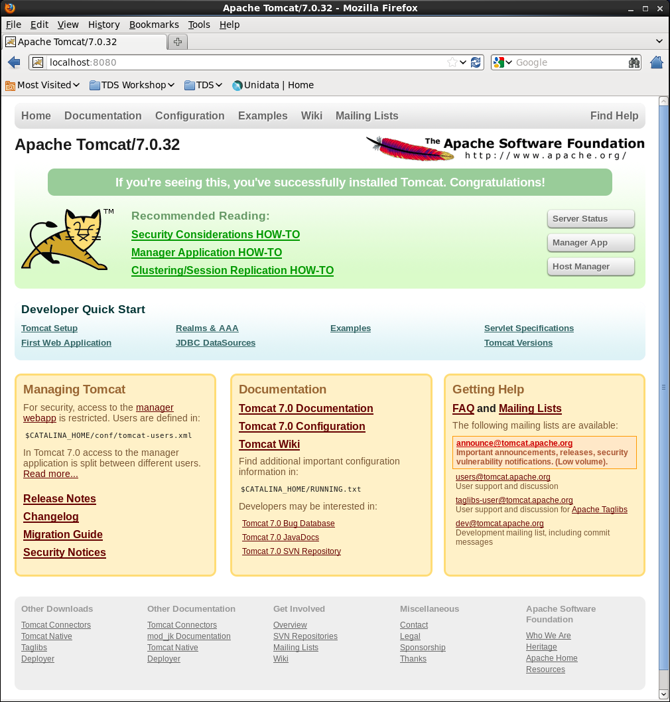

- Tomcat isn't currently running so we need to start it up.
Run the startup.sh script in the Tomcat bin/ directory:
$ pwd
/home/tds/GettingStarted/apache-tomcat-7.0.32
$ bin/startup.sh
- Verify Tomcat is running.
Look and see if you have a Tomcat process running:
$ ps -ef | grep tomcat
tds 2688 1 5 11:01 pts/1 00:00:02 /usr/bin/java -Djava.util.logging.config.file=/home/tds/GettingStarted/apache-tomcat-7.0.32/conf/logging.properties -Djava.util.logging.manager=org.apache.juli.ClassLoaderLogManager -Djava.endorsed.dirs=/home/tds/GettingStarted/apache-tomcat-7.0.32/endorsed -classpath /home/tds/GettingStarted/apache-tomcat-7.0.32/bin/bootstrap.jar:/home/tds/GettingStarted/apache-tomcat-7.0.32/bin/tomcat-juli.jar -Dcatalina.base=/home/tds/GettingStarted/apache-tomcat-7.0.32 -Dcatalina.home=/home/tds/GettingStarted/apache-tomcat-7.0.32 -Djava.io.tmpdir=/home/tds/GettingStarted/apache-tomcat-7.0.32/temp org.apache.catalina.startup.Bootstrap start
tds 2711 2197 0 11:02 pts/1 00:00:00 grep tomcat
Open a new browser window/tab and go to http://localhost:8080/ to verify Tomcat is running:

- See if you can shutdown Tomcat.
Run the shutdown.sh script in the Tomcat bin/ directory:
$ bin/shutdown.sh
- Create the
setenv.sh file.
Using your favorite text editor (gedit, vi, emacs, etc.), create a new file called setenv.sh in the Tomcat bin/ directory:
$ pwd
/home/tds/GettingStarted/apache-tomcat-7.0.32
$ cd bin
$ vi setenv.sh
Add the following information and save your setenv.sh file:
#!/bin/sh
#
# ENVARS for Tomcat and TDS environment
#
JAVA_HOME="/home/tds/GettingStarted/jdk1.7.0_07"
export JAVA_HOME
JAVA_OPTS="-Xmx4096m -Xms512m -server -Djava.awt.headless=true -Djava.util.prefs.systemRoot=$CATALINA_BASE/content/thredds/javaUtilPrefs"
export JAVA_OPTS
CATALINA_BASE="/home/tds/GettingStarted/apache-tomcat-7.0.32"
export CATALINA_BASE
Settings
Whenever possible, Unidata recommends -Xmx1500m for 32-bit systems, and-Xmx4096m (or more) for 64-bit systems.
The parameters we pass to $JAVA_OPTS:
-Xms is the initial allocated memory of the JVM (for performance).-Xmx the maximum allocated memory of the JVM (for performance).-server tells the Hostspot compiler to run the JVM in "server" mode.-Djava.awt.headless=true is needed to prevent graphics rendering code from assuming a graphics console exists. Without this, WMS code will crash the server in some circumstances.-Djava.util.prefs.systemRoot=$CATALINA_BASE/content/thredds/javaUtilPrefs allows the java.util.prefs of the TDS WMS to write system preferences to a location that is writable by the Tomcat user.
- Implement your changes by restarting Tomcat.
Restart Tomcat and examine the output generated to the terminal window by the startup script:
$ ./startup.sh
Using CATALINA_BASE: /home/tds/GettingStarted/apache-tomcat-7.0.32
Using CATALINA_HOME: /home/tds/GettingStarted/apache-tomcat-7.0.32
Using CATALINA_TMPDIR: /home/tds/GettingStarted/apache-tomcat-7.0.32/temp
Using JRE_HOME: /home/tds/GettingStarted/jdk1.7.0_07
Using CLASSPATH: /home/tds/GettingStarted/apache-tomcat-7.0.32/bin/bootstrap.jar:/home/tds/GettingStarted/apache-tomcat-7.0.32/bin/tomcat-juli.jar
Did you notice any difference in the what is being reported to STDOUT during startup?
Take a look at the running Tomcat process to see the new $JAVA_OPTS settings:
$ ps -ef | grep tomcat
tds 2819 1 28 11:17 pts/1 00:00:02 /home/tds/GettingStarted/jdk1.7.0_07/bin/java -Djava.util.logging.config.file=/home/tds/GettingStarted/apache-tomcat-7.0.32/conf/logging.properties -Xmx4096m -Xms512m -server -Djava.awt.headless=true -Djava.util.prefs.systemRoot=/home/tds/GettingStarted/apache-tomcat-7.0.32/content/thredds/javaUtilPrefs -Djava.util.logging.manager=org.apache.juli.ClassLoaderLogManager -Djava.endorsed.dirs=/home/tds/GettingStarted/apache-tomcat-7.0.32/endorsed -classpath /home/tds/GettingStarted/apache-tomcat-7.0.32/bin/bootstrap.jar:/home/tds/GettingStarted/apache-tomcat-7.0.32/bin/tomcat-juli.jar -Dcatalina.base=/home/tds/GettingStarted/apache-tomcat-7.0.32 -Dcatalina.home=/home/tds/GettingStarted/apache-tomcat-7.0.32 -Djava.io.tmpdir=/home/tds/GettingStarted/apache-tomcat-7.0.32/temp org.apache.catalina.startup.Bootstrap start
What allows us to create the setenv.sh file and have its contents read? (Hint: have a look at the catalina.sh file in the Tomcat bin/ directory at lines 24 and 133).
Troubleshooting
- Do not forget include the '
m' in your -Xms and -Xmx settings.
- You may have allocated too much memory for the JVM settings if Tomcat fails to start and you get the following error reported in the Tomcat log
catalina.out:
Error occurred during initialization of VM
Could not reserve enough space for object heap
- Likewise, if there is an error with your JVM memory allocation syntax in the
setenv.sh file, it will be reported to catalina.out:
Error occurred during initialization of VM
Incompatible minimum and maximum heap sizes specified
- If you intend to use WMS and see something like the following in reported in
catalina.out:
May 25, 2010 6:28:22 PM java.util.prefs.FileSystemPreferences syncWorld
WARNING: Couldn't flush system prefs: java.util.prefs.BackingStoreException: /etc/.java/.systemPrefs/org create failed.
You will need to set the java.util.prefs.systemRoot system property in $JAVA_OPTS to a location that is writable by the user that Tomcat, e.g.:
#!/bin/sh
#
# ENVARS for Tomcat and TDS environment
#
JAVA_HOME="/home/tds/GettingStarted/jdk1.7.0_07"
export JAVA_HOME
JAVA_OPTS="-Xmx4096m -Xms512m -server -Djava.awt.headless=true -Djava.util.prefs.systemRoot=$CATALINA_BASE/content/thredds/javaUtilPrefs"
export JAVA_OPTS
CATALINA_BASE="/home/tds/GettingStarted/apache-tomcat-7.0.32"
export CATALINA_BASE